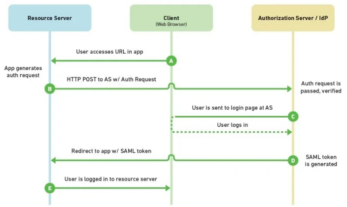
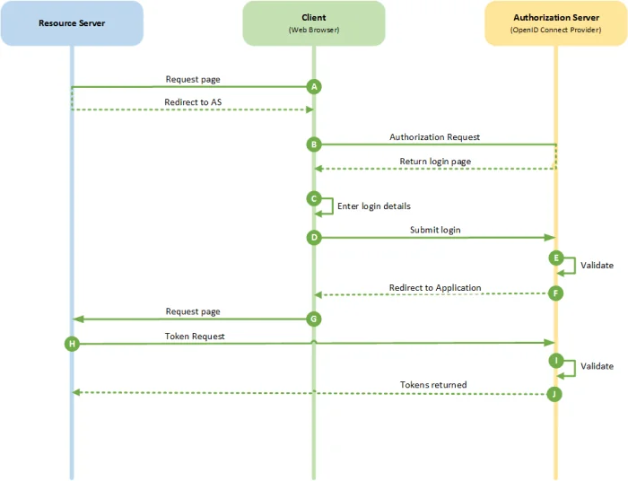

Knowing about SAML, OpenID Connect, and Oauth Authentication Protocols
Discerning the nuances between the security protocols for authentication can be a challenge. This perspective is provided to show the differences between AD FS, SAML, OpenID Connect, and Oauth what they are and how they are used.
Active Directory Federation Services (AD FS) Authentication Protocol
Microsoft developed AD FS to extend enterprise identity beyond the firewall. It provides single sign-on access to servers that are off-premises. AD FS uses a claims-based access control authorization model. This process involves authenticating users via cookies and Security Assertion Markup Language (SAML).
That means AD FS is a type of Security Token Service, or STS. You can configure STS to have trust relationships that also accept OpenID accounts. This lets companies bypass setting up separate registration and user credentials when adding new users—they can just use the existing OpenID credentials.
AD FS is a valuable tool, but it does have a few drawbacks:
It’s cumbersome to use when integrating with cloud or non-Microsoft mobile applications
It requires IT resources to install, configure, and maintain
It’s difficult to scale and requires tedious application installations
Although it’s technically a free offering from Microsoft, using AD FS can incur hidden costs like the time and effort for IT to maintain it.
What is SAML Authentication Protocol
Security Assertion Markup Language or SAML is the oldest of the main federated identity protocols with its last major revision in 2005. There are three major players in SAML – the user, the Identity Provider (or IdP) that authenticates the user, and the Service Provider (or SP) such as an application.
SAML has three primary components which are the assertion, the protocol, and the binding. The SAML assertion is an XML-based package of information that contains specific information such as the user, group the user belongs to, or any other information that might be useful to an application. Assertions are for authentication (identifying a user), attributes (information about a user), or authorization (what a user can access and do).
The protocol defines how assertions are sent and received. Finally, the binding is a definition of how SAML message exchanges and Simple Object Access Protocol (SOAP) exchanges are mapped to each other.
Here's a simplified use case of SAML. The user needs to access many different applications. The user’s client tells an application - which is the Service Provider - that they want to access its services. The Service Provider then needs to check if the user is authenticated. If they are, then the user is free to proceed. If they aren’t, the client needs to go to the Identity Provider for authentication.
The Identity Provider will authenticate the user against some credential at this point. Once the Identity Provider has authenticated the user giving access to the application, it then creates the SAML assertion. The Identity Provider passes the SAML assertion to the client which then passes it to the Service Provider. The Identity Provider can also pass the assertion to different applications as needed saving the user from re-authenticating.

SAML 2.0 flow diagram
Microsoft & AD FS Terminology
Microsoft’s Active Directory Federation Services has its own terminology and approach to SAML, so it warrants a short explanation. Microsoft AD FS is an identity provider.
Relying Party is the term that Microsoft AD FS uses to mean Service Provider.
Claims Rules is another term that only Microsoft AD FS uses. Claims Rules are rules you can apply to alter how or when to invoke authentication. For example, an admin could set up a claims rule that only applies when a user comes to AD FS as they’re trying to get to Dropbox. Plus, it prevents them from using a mobile device allowing that user to log in with a laptop or desktop device, but not their Android or iPhone. Some IdPs other than AD FS can create similar rules, but AD FS allows for some of the most robust and complex rule creation.
ImmutableID is the Microsoft Azure AD equivalent of an ObjectGUID. It’s not specific to AD FS, but it’s worth a mention.
WS-Fed is similar to SAML and abides by many of the same rules. It’s a protocol specifically created by Microsoft and not widely supported by IdPs other than AD FS.
Benefits of Configuring 3rd Party Authentication Providers as Primary Authentication in AD FS
Organizations are experiencing attacks that attempt to brute force, compromise, or otherwise lock out user accounts by sending password-based authentication requests. To help protect organizations from compromise, AD FS has introduced capabilities such as extranet “smart” lockout and IP address-based blocking.
However, these mitigations are reactive. To provide a proactive way to reduce the severity of these attacks, AD FS has the ability to prompt for non-password factors prior to collecting the password. For example, AD FS 2016 introduced Azure MFA as primary authentication so that OTP codes from the Authenticator App could be used as the first factor. Building on this with AD FS 2019, you can configure external authentication providers as primary authentication factors. Following are two key scenarios this enables.
Scenario 1: Protect the Password
Microsoft developed AD FS to extend enterprise identity beyond the firewall.
It provides single sign-on access to servers that are off-premises. AD FS uses a claims-based access control authorization model. This process involves authenticating users via cookies and Security Assertion Markup Language (SAML).
Scenario 2: Passwordless
You can also eliminate passwords entirely by completing a strong, multi-factor authentication using entirely passwordless methods in AD FS.
Azure MFA with Authenticator app
Windows 10 Hello for Business
Certificate authentication
External authentication providers (this provides the best risk mitigation for impersonation attacks like phishing and MitM) which requires some sort of integration with Microsoft
Defining OpenID Connect Authentication Protocol
While OAuth 2.0 isn’t quite suited for authentication, OpenID Connect manages to solve this problem. Established in 2014, OpenID Connect is an identity layer built on top of OAuth 2.0, with a large number of implementations from companies such as Google and PayPal. OpenID Connect enables client applications to receive valuable basic information about a user, such as the user’s identity, the user’s available attributes, and other authentication-related details. Like SAML, authentication is done by some Identity Provider, such as Google, which is then relayed back to the relaying party or the service requesting authentication.
Supported Identity Providers range from large companies to small providers, such as a self-issued one. OpenID Connect was designed with simplicity in mind and uses REST/JSON message flows. It supports a variety of clients including web-based clients, mobile clients, and JavaScript clients. Finally, OpenID Connects extensible specification allows for optional features such as encryption of identity data, discovery of OpenID Providers, and session management.

OpenID Connect Flow Diagram
Conclusion
OpenId Connect is built on the process flows of OAuth 2.0 and typically uses JWT (JSON Web token) format for the id-token.
SAML flow is independent of OAuth 2.0 and relies on the exchange of messages for authentication in XML SAML format (instead of JWT format).
Both flows allow for SSO (Single Sign On), and the ability to log into a website using your login credentials from a Social site (e.g. Facebook login or Google login).
OpenId Connect is newer and built on the OAuth 2.0 process flow. It is tried and tested and typically used in consumer websites, web apps and mobile apps.
SAML is its older cousin, and typically used in enterprise settings in, for example, allowing single sign on to multiple applications within an enterprise using the Active Directory login.
Comparing SAML vs. OpenID Connect Authentication Protocols
At the risk of over-simplification, OpenID Connect is a rewrite of SAML using OAuth 2.0. Here are a few similarities and differences.
IDP / SP vs. OP / RP
In SAML, the user is redirected from the Service Provider (SP) to the Identity Provider (IDP) for sign in. In OpenID Connect, the user is redirected from the Relying Party (RP) to the OpenID Provider (OP) for sign in. The SAML SP is always a website. The OpenID Connect RP is either a web or mobile application and is frequently called the “client” because it extends an OAuth 2.0 client. In both cases, the IDP/OP controls the login to avoid exposing secrets (like passwords) to the website or app.
Assertion vs. id_token
In SAML, there is an “assertion” - a signed XML document with the subject information (who authenticated), attributes (info about the person), the issuer (who issued the assertion), and other information about the authentication event. The equivalent in OpenID Connect is the id_token. This is a signed JSON document that contains the subject, issuer, and authentication information.
Front Channel vs. Back Channel
A big difference between OpenID Connect and SAML is the use of a “front-channel” and a “back-channel.” The front-channel is the browser and the back-channel is the communication directly between the application and the IDP/OP.
Although SAML defines back-channel mechanisms, they are rarely used in practice. The most common way SAML sends the request XML and response XML (assertion) is via the browser. Most SAML sites use the “POST Binding” to send the response. In this scenario, the browser is sent as an HTML form from the IDP with the response XML as a form parameter. There is some JavaScript in the form to auto-submit the data back to the SP. It’s a neat trick because the SP and IDP don’t need network connectivity to communicate because the browser acts as the middle-man!
OpenID Connect defines a similar mechanism (“Form Post Response Mode”), but unlike SAML, its use is more the exception than the rule. Both OpenID Connect and SAML frequently use something like the “Redirect Binding” to send the request. This is where the URL parameters are used to send the XML. This also leverages the browser.
OpenID Connect normally uses the back channel - a direct call from the RP to the OP - to retrieve this information. The attributes (or “user claims” in OpenID jargon) are available to the client by calling the user_info endpoint which is a JSON REST API. However, because this is OAuth 2.0, the client needs a token to call this API. According to the OAuth 2.0 framework, the token is obtained from the OP’s token endpoint using the back channel.
Which authentication protocol, when?
When should SAML be used and when should OAuth 2.0 or OpenID Connect be used instead?
With mobile applications, there’s no question - use OpenID Connect
If the application already supports SAML, use SAML
If you are writing a new application, use OpenID Connect because that’s where the technology is being accepted
If you need to protect APIs or you need to create an API Gateway, the short answer is to use OAuth 2.0 or the User Managed Access (“UMA”) protocol. Yes, this response an oversimplification
How Is SAML Different from Oauth and Web Services Federation?
You may have heard about these other SAML alternatives in passing, but how do they differ? Should you have an opinion on which one is best? Understand that SAML, OAuth, and Web Services Federation (WS-Fed) all vary technically as well as how they’re best put to use.
SAML – is most commonly used by businesses to allow their users to access services for which they pay. Salesforce, Gmail, Box and Expensify are all examples of service providers an employee would gain access to after a SAML login. SAML asserts to the service provider who the user is; this is authentication.
WS-Fed - Web Services Federation is used for the same purposes as SAML, to federate authentication from service providers to a common identity provider. It’s well supported with certain IdPs, like Microsoft Active Directory Federation Services (AD FS), but it’s not prevalent with cloud service providers. WS-Fed is arguably simpler than SAML for developers to implement, but its limited support among IdPs and SPs alike limit adoption.
OAuth – is the most commonly used by consumer apps and services so users don’t have to sign up for a new username and password. “Sign in with Google” and “Log in with Facebook” are examples of OAuth in the real world. OAuth delegates access to a person’s Google or Facebook account by a third party.
Typically, the app the user is signing into can directly read information from the user’s profile or take actions (like post pictures or make updates) on their behalf. This is an example of authorization. What’s more important is to look at the prevalence of each technology for each use case. SAML is ubiquitous in the workplace for cloud-based apps while WS-Fed is not. Conversely, OAuth is ubiquitous among consumer apps.